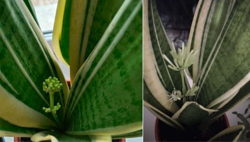
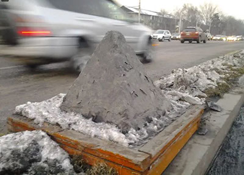
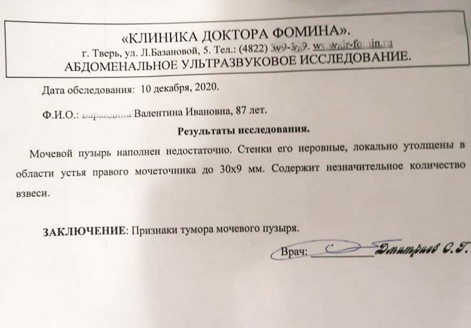
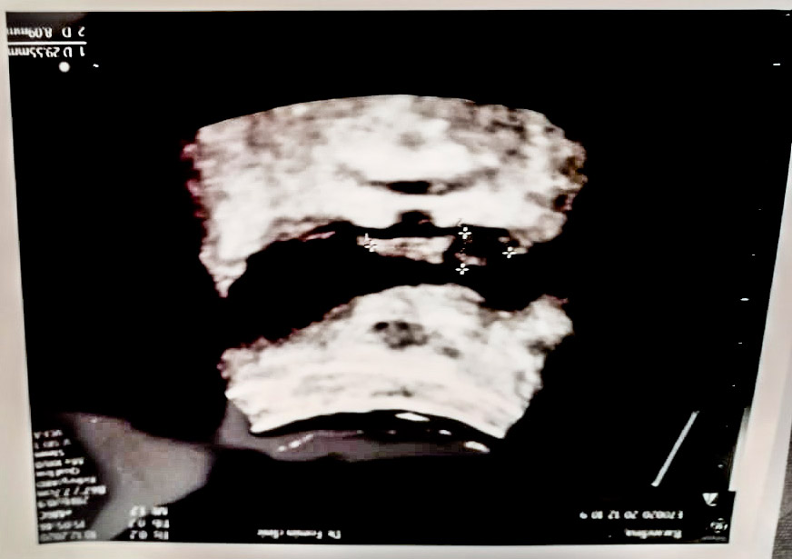
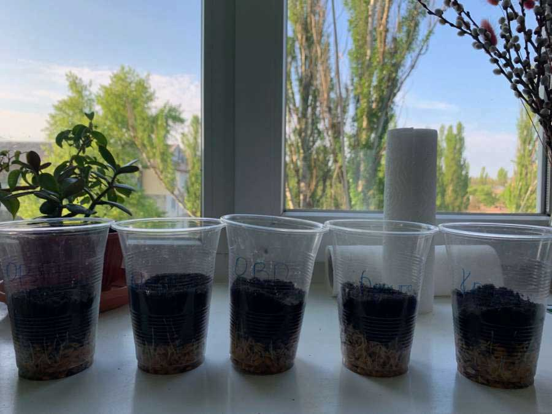
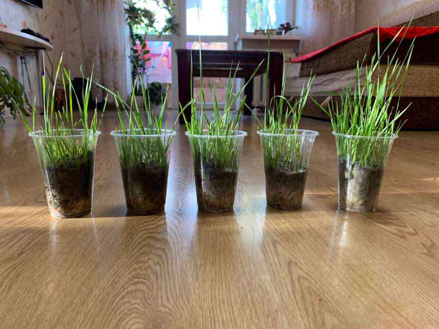
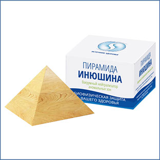
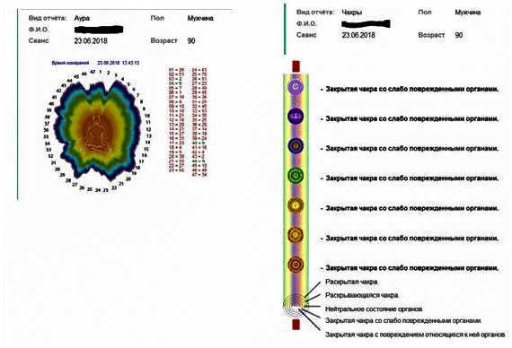
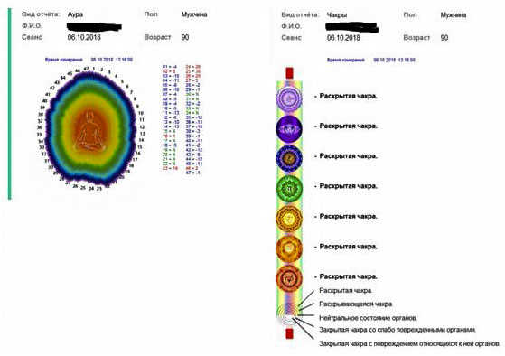

Гидроплазма восстанавливает здоровье
Я житель города Астана, пью живую воду с семьей 9 лет. За время употребления получила только положительные результаты. Лекарства вообще не пью. Организм полностью восстановился.
Даже пьют мои внуки. На болячки прикладываю, им очень хорошо помогает. Даже кошке моей помогло, когда у него была большая рана. Очень хорошо снимает температуру детям и взрослым. У моей сестренки рак груди она уже собиралась умирать вся черная от этих лекарств, которые ей давали в онкологии. Потом я предложила Живую воду. Она сразу согласилась, и я ей выписала у вас в 2023 году, она начала пить 1 каплю гидроплазмы на 1 литр воды.
Она пропила полгода потом ходила сдавала анализы, прошла МРТ, КТ, у нее были хорошие результаты. Вся посвежела побелела даже глаза у нее смеются, я так была рада что она ожила. А до этого у нее между грудями была рана, которая не заживала. Я ей подсказала чтобы она приложила на болячку тампон с гидроплазмой и представляете рана зажила. Которая не заживала, когда она мази прикладывала. У нее немного побаливали легкие до питья гидроплазмы а сейчас все, больше не беспокоит. Вот такие чудеса творит наша Гидроплазма.
Сестренка пьет биогенную воду больше года. Сейчас ее каждые полгода проверяют все хорошо. Дай Бог ей здоровья и нашему замечательному спасителю всех живых душ, которые верят и боготворят нашего дорогого Инюшина.
Я сама за время употребления очистила свой организм от шлаков токсинов. Один раз так сильно упала на асфальт с двумя коленями и получила большую гематому обеих ног. Нельзя что делать лекарства какие прикладывать забыла и решила прикладывать гидроплазму намочив сильно вату и прикладывала на колени 3 дня и представьте гематома прошла. Вот такие чудеса творит гидроплазма. Живая вода.
Дед мой пьет воду тоже со мной 9 лет. У нет простатита. Он простывает сильно кашель пьет воду и отхаркивает мокроту. Зимой никакой вирус не берет/грипп и другие ОРЗ. Я недавно предложила одной женщине в автобусе встретились у нее одна рука была сильно опухшей, а другая нет. И я решила мимо не пройти хотя я ее впервые вижу и предложила гидроплазму. Она сразу согласилась и через меня выписала и сейчас пьет воду с гидроплазмой 3 месяц, у нее пошли сдвиги перестала болеть рука говорит она и сейчас у нее состояние очень хорошее. Чувствует себя хорошо и энергию получает от гидроплазмы.
Вот такие дела у нас. Дай Бог всем здоровья и чтоб наш спаситель господин Инюшин жил долго и радовал нас своей живой водой.
Зейнеп. 78 лет. г. Астана. Казахстан.
Гидроплазма как скорая помощь
Добрый день! Меня зовут Мария.
Я пользуюсь вашей продукцией (гидроплазма) с 2020года. Мои отзывы положительные. Использую и внутрь, и наружно, капаю в глаза, в нос и в уши. Недавно к мне приехала знакомая с внуком и у мальчика начали опухать и чесаться глаза. У меня во дворе много полыни, и я решила воспользоваться вашей водой, намочила ватку и протёрли глаза и вокруг глаз. Отеки прошли. Спасибо большое за скорую помощь, быстро подействовала.
Мария. 74 года. Казахстан.
Отзыв о пирамиде Инюшина
Несколько лет назад приобретала пирамиду и гидроплазму у компании Источник Здоровья.
Эффект пирамиды спустя, кажется 5 лет, невероятный. Атмосфера в квартире, где стоит пирамида улучшилось. И не только в квартире, но и во всем доме наступил мир и покой. Соседка рассталась с мужем алкоголиком и за ней стали ухаживать приличные мужчины.
Но главное это то, что мама себя великолепно чувствует, у неё психические особенности и с пирамидой она стала абсолютно здорова, она стала уверенной в себе, позитивной, активной, самостоятельной. На днях я решила проверить пирамида ли на неё так влияет, взяла её в свою квартиру, я сразу ощутила её эффект на себе. Но мама сразу стала хуже себя ощущать. Вернула маме пирамидку - мама через три часа в себя пришла, ожила сразу. А было ух как не хорошо без пирамидки. Сильное действие. Очевидно, это в ней причина её безупречного состояния.
Про гидроплазму отдельная история. Очень очищает организм, сознание. Пробовала на себе. (Мама её не пробовала) но это волшебство! Преображает состояние на всех уровнях.
Ирина. Казань. Россия.
Гидроплазма творит чудеса!

Хочу поделиться своим отзывом применения гидроплазмы. Пять лет назад у меня появился цветок "Сансевиерия". Цветёт это растение мелкими цветками сиреневого либо белого цвета. Цветущая "Сансевиерия" источает сильный ванильный аромат, но вы, скорее всего, никогда его не почувствуете, ведь в условиях квартиры или офиса растение зацветает очень редко.
Мой цветок тоже не цвёл 5 лет. И вот, когда я получила гидроплазму, решила полить, капнула каплю на литровую бутылочку и поливала маленькими дозами. Прошло две недели примерно, цветок выкинул стрелку. Вот так чудо. Гидроплазма оживила цветок. Жаль, что невозможно передать запах.
Татьяна. Павлодар. Казахстан.
Отзыв о пирамиде Инюшина
 Здравствуйте, хочу поделится отзывом, точней рассказать своё мнение. Два года назад я купил в компании Источник Здоровья большую пирамиду Инюшина. После стал ее использовать у себя дома. Я живу в многоэтажном доме, возле которого есть не регулируемый перекрёсток, на котором раньше довольно часто были аварии, по несколько раз в месяц, и жильцы моего дома, как и я уже, к сожалению, привыкли к этому явлению. Недавно я вдруг понял, что на этом перекрестке давно не было аварий, ну, думаю может я просто их не замечал, или не знал о них. Пообщавшись с соседями, я узнал от них что действительно уже больше года не было аварий на этом перекрестке. И я вспомнил что радиус действия пирамиды, которая стоит у меня дома 120 метров, и этот аварийный перекресток как раз попадает в этот радиус, позже я нашёл в интернете статьи о том, что Инюшин в городе Алматы на особо аварийных перекрестках устанавливал пирамиды свои, и как показали исследования аварийность этих перекрестков снизилась, как и в моем случае. Конечно, в моем случае это не гарантия того что так действует пирамиды, я не знаю как провести исследование как Инюшин что бы выяснить это точно, но факт остается фактом, аварий на этом перекрестке давно не было.
Сергей. Алматы. Казахстан.
Отзыв. Гидроплазма Инюшина.
Я, бы хотела оставить отзыв о продукции Инюшина, а конкретно, о гидроплазме.
Мне 70 лет зовут Надежда, я употребляла гидроплазму в течении 1,5 лет. И как-то пропила и на этом и закончила, забыв обо всем. Но когда я пошла проходить диспансеризацию, то конкретно удивилась, когда мне сделали УЗИ щитовидной железы. До этого она была у меня вся в узлах и, к моему удивлению, доктор сказала у вас пару узелков не больших, а я говорю где остальные? Ничего не осталось, и это не все.
Пошла я на УЗИ брюшной полости, у меня был "панкреотит" много лет, так и от него и следа не осталось, вот и теперь решила продолжить употреблять гидроплазму. До сих пор в свои 70 лет работаю без устали.
Здоровья и процветания фирме Инюшина.
Отзыв о гидроплазме.
Меня зовут Владимир, мне 45 лет.
Хочу рассказать о продукте "Гидроплазма Инюшина", компании "Источник Здоровья".
С этим продуктом я познакомился 5 лет назад. На тот момент я решал проблему со зрением. Оно, у меня настолько просело, что я уже не мог читать сообщения на смартфоне, не мог читать книги, также не мог элементарно прочитать информацию на мониторе своего компьютера. Я узнал об этом продукте, я его купил и начал пить. Изначально я ничего особенного не почувствовал. Хотя ожидал если честно большего. Да, у меня стало лучше самочувствие, больше энергии, я стал более спокойным, у меня улучшился сон, он стал более глубоким, здоровым. Я стал очень хорошо высыпаться, и меня это вполне устраивало на тот момент, эти результаты. Примерно через 2 месяца я заметил, что моё зрение как бы улучшилось, и помимо того, что я пил данный продукт, я стал ещё капать его в глаза, и уже на восьмом месяце я вышел на 100% зрение я смог восстановить своё зрение, без различных как говорится вспомогательных медицинских средств.
Я на этом не остановился, продолжил употреблять продукт, и на второй год начала решаться моя проблема с почками. У меня с детства было такое заболевание хроническое как пиелонефрит. У меня также пошёл песок из почек, и последующие ещё 2 года примерно, эта проблема решалась. Через два года проблема с почками также решилась. А я продолжил дальше употреблять данный продукт в целях профилактики, поддержание здоровья. Окружающие меня люди заметили, говорили мне о том, что я стал выглядеть лучше, моложе своего возраста. Так же, к моему удивлению, решилась проблема с моим лишним весом, мне пришлось поменять гардероб на размер меньше. Вот, я и по сей день употребляю данный продукт. Я не хочу сказать, что этот продукт панацея от всех болезней. Ну, я лично убедился в том, что он помогает улучшать, восстанавливать здоровье. Попробуйте и вы. Я думаю, каждый из вас получит тоже какой-то свой успех, результат в улучшения здоровья.
Отзыв о продукции Инюшина.
Мы начали употреблять продукты не так давно. Результаты очень интересные. У мужа левая нога темно-фиолетового цвета. Последствия онкологии. Рак предстательной железы, с метостазами в тазобедренные кости. Зажат и разрушен нерв поврежденными дисками позвоночника. Боль невыносимая. Чтобы хоть как-то ночью спать, он пьет таблетки, которые отключают рецепторы головного мозга и боль становится меньше. Но эти таблетки сильно разрушают головной мозг и человеческий организм в целом. Муж попробовал мазать всю левую ногу, начиная от бедра, бальзамом Инюшина. И боль стала уменьшаться без применения таблеток. Каждый раз, когда боль возвращалась, он мазал больные места бальзамом Инюшина, и боль медленно уходила.
У меня маленькая внучка росла совсем слабенькой. В два годика ее вес был, как у годовалого ребенка. Постоянно была нервной, капризничала, практически ничего не ела. Она не ела фруктовые и овощные пюре, каши, кроме овсяной, не ела рыбу, яйца, супы...Нужно было сидеть с ней рядом часами и кормить с рук понемножку. После применения воды с гидроплазмой Инюшина, полимодулятора Инюшина, биопорферина Инюшина, девочка прямо-таки ожила. Стала лучше кушать, больше, и даже то, что раньше не хотела. Она стала более спокойной и появился румянец на щечках. Этот результат появился прямо на глазах! Также немного о себе, о своих результатах.
Я попробовала нанести бальзам Инюшина на ногти пальцев на ногах. Много лет мучаюсь с грибком. Перепробовала все, что только можно. Были или временные результаты или никаких. Пила таблетки, которые разрушают печень. Грибок резко уходил, но через три месяца после окончания применения таблеток, снова возвращался. Так вот, когда я нанесла на ногти немножко бальзама Инюшина, только на ногти, то почувствовала все стопы лёгкими, как в детстве. Через три дня весь грибок с ногтей ушёл! Выправилась форма ногтей. Я все смотрю и смотрю, показываю своим родным и не могу поверить в это чудо. Также я наносила бальзам Инюшина на лицо. Совсем чуть-чуть. Ощущения непередаваемые. Лицо стало каким-то мягким. Я стала его хорошо чувствовать. Я перестала использовать бальзам, берегу для мужа. Ему нужнее. Ногти, по-прежнему, растут без грибка. Просто волшебство какое-то.
Вчера дочь спросила у меня, как моё зрение? Мы были на улице. Говорит: "Посмотри на Луну, ты по-прежнему, видишь её, как три, вместо одной?". Я посмотрела в небо, смотрю на Луну и вижу, что она одна! Также я в магазине не могла прочитать состав продуктов. Обычно текст маленький. Надевала очки и ещё брала лупу, так и читала. Очень неудобно было. Вчера же я смогла прочитать ингредиенты в очках, но уже без лупы. Также я перестала чувствовать тянущую боль в правом подреберье.
Несмотря на хорошее питание, постоянное употребление лечебной полыни, ниима, шрота расторопши, лечебное голодание, ничего не помогало. Боли появились после ковида. Как только я стала применять продукты Инюшина, они исчезли.
Хотя я и моя семья используем продукты нашего дорогого и любимого академика Инюшина всего недавно, результаты уже налицо. Низкий поклон и успехов всей команде в благих делах!
Лариса. США.
Отзыв о гидроплазме Инюшина.
Хочу поделится своим отзывом о гидроплазме.
У меня была аллергия на цвет полыни с детства. За свою жизнь я привыкла к этому недугу, перепробовала разные медицинские лечения, разными медицинскими препаратами, которые не решали мою проблему особо, в итоге я смирилась с этой болезнью, понимая, что мне с этим жить уже всю жизнь.
Три года назад я узнала от своей знакомой что ей гидроплазма помогает при аллергии. С трудом веря, что мне это поможет, я купила гидроплазму в компании «Источник Здоровья» и начала её пить, а в момент обострений ещё и капать в глаза и в нос. Первый год я пережила уже легче обострения в сезон цвета полыни, второй год ещё легче, на третий год я с наступлением сезона ждала как обычно обострений, но через время я поняла, что их не будет. Первый раз за десятки лет я пережила лето как нормальный человек, без аллергических обострений, для меня это было очень непривычно, я ждала что обострения наступят, но сезон цвета полыни закончился, а у меня даже малейших обострений не было.
Буду продолжать употреблять этот чудесный продукт, созданный Инюшиным В.М. за который ему очень благодарна, и надеюсь аллергия уже никогда ко мне не вернётся.
Валентина. Казахстан. г. Экибастуз. 57 лет.
Отзыв о гидроплазме.
Дорогие друзья, хотел поделиться отзывом о моем многолетнем применении продукции В. М. Инюшина.
Знаком я со всеми продуктами компании «Источник Здоровья», не первый год, отмечу положительное влияние "гидроплазмы" на мой организм, и организм всей моей семьи, ее я использую также как капли в нос и в глаза добавляю в шампунь и другие косметические средства для усиления эффекта.
Раньше пользовался продукцией компании «Imagine People».
Но теперь перешёл в компанию «Источник Здоровья», потому что эффективность продукции этой компании ощутил на себе как-то отчётливей и быстрее!!! Да и цена выгодней.
При закапывании в нос отмечаю значительные улучшения состояния Вазомоторного ринита и заложенности носа при ОРВИ, думаю, что тем людям, которые перенесли COVID и потеряли обоняние стоит попробовать закапывать концентрат гидроплазмы Инюшина в нос, она явно должна оказать влияние на ликвидацию этой проблемы.
В общем рекомендую в качестве профилактики и оздоровления применять продукцию Инюшина от компании «Источник Здоровья».
Евгений
Отзыв о продукции Академика Инюшина В.М.
В первую очередь в своем отзыве хотелось бы поблагодарить Уважаемого Виктора Михайловича за уникальную продукцию, уникальные современные разработки, которые позволяют людям улучшить свое здоровье и настроение, также хотелось бы поблагодарить команду профессионалов ученых, которые помогают Виктору Михайловичу в его трудах, особую благодарность хочется выразить руководителю компании Источник Здоровья и всему персоналу компании за профессионализм, тактичность и честность!
В первую очередь в своем отзыве хотелось бы поблагодарить Уважаемого Виктора Михайловича за уникальную продукцию, уникальные современные разработки, которые позволяют людям улучшить свое здоровье и настроение, также хотелось бы поблагодарить команду профессионалов ученых, которые помогают Виктору Михайловичу в его трудах, особую благодарность хочется выразить руководителю компании Источник Здоровья и всему персоналу компании за профессионализм, тактичность и честность!
Прошу прощения, отзыв может быть немного большой, но хотелось сказать как можно больше, спасибо!
Владимир.
Отзыв о продукции Инюшина
У меня очень сухая кожа, приобрела "Бальзам Инюшина", начала использовать на лице, очень нежная текстура, наношу вокруг глаз, при попадании в глаза, нет не приятных ощущений, кожа становится более ровная, светлая.
Не давно переболела ковид, после этого появились на лице коричневые пятна, и сильно ухудшилось качество волос.
Начала использовать бальзам более интенсивно, плюс "Полимодулятор Инюшина". Пятна на лице стали светлеть. Волосы сбрызгиваю водой с гидроплазмой Инюшина и иногда добавляю полимодулятор, но этого явно недостаточно, для такого стресса для волос, тогда я наношу на ладони бальзам и распределяю по волосам, результат заметила почти сразу, волосы стали мягче и появился блеск!!!
Я очень рада! Но при таком интенсивном использовании, этой маленькой баночки, мне хватает на 5- 7 дней....
Прошу руководство компании, рассмотреть предложение, о расфасовке в более крупную ёмкость, например 50-100 гр. Я бы хотела использовать этот бальзам, в салоне для работы с клиентами.
Благодарю за великолепные продукты.
Елена. г. Москва
Гидроплазма Инюшина. Помощь при травмах.
Хочу описать действия Гидроплазмы на травму колена, полученную 5 июля 2022 г. Споткнулась и упала на кафельный пол всем своим ростом и весом. Боль была адская. Вызывала скорую сделать обезболивающий укол. Перелома не было как показал рентген. Прописанные врачом уколы и таблетки не помогали. Передвигалась по дому на ходунках. Наступать на ногу не могла. А через месяц прибавилась еще одна боль в колене, резко стреляющая, как током и пронизывающая все тело в любом положении: лежа, стоя, сидя на стуле. Эти ужасные болевые выстрелы измотали меня до предела! Находясь в интернете, появилась реклама: "Гидроплазма Инюшина". Заказываю ее и с 18 августа начинаю пить, 1 капля на литр воды. За три дня ушла мышечная боль во всем теле, могла глубоко вздохнуть легкими. Но выстрелы в колене продолжались. На четвертый день позвонили из компании "Источник здоровья". Мне дали рекомендацию делать компрессы на колено: 10 капель на литр воды. Забота и внимание команды Инюшина меня поразила!!!
Две процедуры за два дня меня поставили на ноги! Я стала ходить! Моему ликованию нет предела!!! Огромная благодарность Виктору Михайловичу за его изобретение, которое действительно оздоравливает наши тела и души. Крепкого вам здоровья и новых продуктов для здоровой жизни!
Валентина. 71год. Самарская область.
Гидроплазма помогает при хроническом бронхите
Здравствуйте.
Мое знакомство с гидроплазмой произошло в конце декабря 2020 года. Пью уже месяц. Хочу рассказать, какие чудеса сотворила «волшебная водичка».
У меня хронический бронхит уже много лет. Диагноз ХОБЛ. В этом году кашель замучил, как никогда. У меня 6 раз обостряется бронхит. Не могла спать. Постоянно потела и поэтому простывала. Пот лил, как из ведра.
После начала употребления воды с гидроплазмой через две недели прошел кашель, перестала потеть. Рассосалось уплотнение на ноге диаметром 1,5 см. Оно появилось около 2х лет назад. Зрение четче стало, стала просыпаться в 5 утра. Чувствую себя бодро. Стала полноценно работать.
Пригласила гостей. Приготовила много блюд и не устала. Память улучшается. Было несколько микроинсультов. Речь стала лучше. Раньше была немножко заторможенной. Давление было 190/220, сейчас 140/145. Продуктом очень довольна.
Большое спасибо Виктору Михайловичу за «водичку». У меня еще артроз, но об этом напишу потом, когда выздоровлю до конца. Пока я в начале пути. Всем здоровья, света и любви.
Кумысай. 57 лет. Россия.
Гидроплазма в помощь при онкологических заболеваниях
Здравствуйте!
Хочу поделиться нашим результатом после приема препарата Гидроплазма.
Моей маме 87 лет. В начале декабря у нее диагностировали рак мочевого пузыря.
От госпитализации она отказалась. Те препараты, которые мы принимали совершенно не действовали.
Состояние ухудшалось с каждым днем. В гости приехал знакомый и рассказал о Гидроплазме.
Дочь купила в Москве и привезла. Нас предупредили, что пить надо начинать по 1 капле. Состояние у мамы изменилось на следующий день.
Вышел огромный сгусток крови и слизи. Прекратилось кровотечение, которое длилось 3 недели и пошел процесс восстановления.
Как в сказке, до сих пор не верится, что такое может быть….
Хочу сделать ей повторное УЗИ и посмотреть, что сейчас происходит в пораженном органе.
Чувствует она себя хорошо, выходим гулять на улицу, а живем на 5 этаже без лифта.
Еще недавно я ее с трудом до кухни доводила.
Вот такая у нас история!!! Я понимаю, что у всех будут свои истории и они будут разные, но пробуйте...все в ваших руках и в вашей голове...
Спасибо огромное компании «Источник Здоровья» за ваш продукт!!!
Марина. г. Тверь.
 Отзыв о манжете Инюшина
Здравствуйте.
Не так давно, я попала в больницу с диагнозом вроде как пневмония, температура 38-39, сильный кашель, высокое давление, головная боль, слабость. В больнице начали лечение, не сразу, но стало чуть легче, но "накрывало" так что голову поднять не могла с подушки целый день. Мне принесли "Манжет Инюшина" и противовирусный комплекс, я одела манжеты, и так же начала делать дополнительно примочки, протирать тело, делать для ног ванночки с добавлением "Гидроплазмы Инюшина". Мое состояние быстро стабилизировалось и пошло на улучшение, кашель стал быстро проходить, давление вернулось на мое рабочее 110/70, а температура упала до 36.0-36.6!!! И, больше не поднималось! Я пользуюсь продукцией Инюшина уже 2 года! И теперь использую еще и "Манжет Инюшина" с противовирусным комплексом! Хочу выразить огромную благодарность В. М. Инюшину за его новую разработку в эти тяжёлые времена эпидемий которая мне реально помогла!!! Здоровья ему и долгих лет жизни!!!
Анастасия. Казахстан. 41 год.
Гидроплазма может помочь там, где бессильна медицина
Хочу поделиться своим отзывом о гидроплазме. Около 5 лет назад, чуть ниже колена у меня образовалось непонятное покраснение, через время появились болезненные ощущения и опухоль, вокруг покраснения образовалось синюшнее обрамление. Многочисленные походы по больницам и врачам результата не давали, никто не мог понять причину моей болезни. Два года назад в мне сделали операцию, но это не решило проблему. После операции шрам затянулся. Через 3 месяца всё повторилось, опухоль, покраснение и синюшность вернулись.
Я начала пить гидроплазму и обрабатывала опухоль снаружи без разбавления. Сначала нога стала оттекать сильней чем раньше, после ежедневной обработки, на ночь я делала повязку. После шестой процедуры оттёк начал спадать, и через несколько дней превратился в красную точку. На десятый день опухоль прорвало, и со временем всё прошло. Более оттёк не повторялся.
Валентина. Казахстан. 51 год.
Гидроплазма помогает заживлять раны быстрей
Я сильно повредила руку в районе локтя, была сильная рваная рана, очень глубокая и сильно кровоточащая. Привычные средства, с помощью которых я пробовала решить проблему заживления действовали медленно.
По совету подруги я решила попробовать гидроплазму. Я стала обрабатывать рану чистым, не разбавленным концентратом. Результат превзошёл все мои ожидания, мне трудно было в это поверить, но рана начала затягиваться быстро, буквально на глазах. Через 10 дней остался шрам больше похожий на обычный порез.
Светлана. Россия. 43 года.
Отзыв о пирамиде Инюшина ВНАЗ-8
Пирамида Инюшина в видео очень мощная, в районе копчика образовалась не чуствительная зона. Приложил. Через пол часа начала эта зона оживать, пошла там пульсация. Через 2 часика нижние позвонки проявили подвижность, очень приятно прохрустели. Подержав в нескольких местах живота вообще словил по всему телу легкость, очень приятно и расслабляюще. Приготовленную гидроплазму пью, из бутылька концентрат, вода аж жажду вызывает, жалко мало купил, хочется сразу всю выпить. Разбавленная не такая нежная. Как понял - пирамида занимает активную позицию, влияя, а гидроплазма пассивную, принимая правильное влияние. При этом, как ощутил, приготовленной гидроплазмы нужно пить больше (2-3 стакана), притом пить залпом, дабы потом жаром пробило застои. Подмечу, что сколько не пей - в туалет не тянет.
Отзыв с комментария с нашего yuotube канала https://youtu.be/Q6CursljEWE
Гидроплазма помогает справиться с травмами
В этом году в январе месяце у меня была травма левой ноги после того, как я сходил с детьми на каток и неудачно покатался на коньках. Обратившись в больницу, я решил проблему с растяжением связок и забыл об этом. Спустя четыре месяца я поработал на даче, и вечером у меня разболелась нога. На следующий день боли не прекратились. Уже вечером я дома намазал бальзамом Инюшина колено и подколенную часть ноги. Стало легче я смог уснуть. Утром у меня ещё была не сильная боль, я повторил действия с бальзамом, решив вечером опять намазать повторно. В течении дня боль прошла. На следующий день я вспомнил про ногу и что забыл вечером намазать её бальзамом, но боли уже не было. Она прошла и больше меня не беспокоила. Вот так я убедился в действенности бальзама, конечно, боль в ноге из-за прошлой травмы не великая проблема, но для меня это было неожиданностью, моя проблема решилась без больниц, врачей и лекарств, как это было ранее у меня.
Я благодарен Инюшину В. М., за такой продукт, как бальзам, желаю ему здоровья и процветания и успешных новых открытий..
Юрий. 43 года. Казахстан.
Гидроплазма помогает при аллергии
Я хотел бы рассказать о собственном применении гидроплазмы Инюшина. В городе где я проживаю, экология не очень хорошая, не ахти, и очень много аллергических проявлений. Вот у меня каждую весну, когда полынь начинает цвести, глаза начинают чесаться вплоть до того, что невозможно на улице ходить. У меня началась очередная аллергия, и я вспомнил, что у меня есть гидроплазма.
И вот как только я покапал в глаза несколько капель, реально этот зуд прекратился. И так я капал утром, вечером два раза в день. И буквально на третий день вся эта аллергия исчезла. Я мучился из-за аллергии. Было невозможно ходить на улице, в огороде что-то делать. И вот благодаря гидроплазме у меня исчезла эта аллергия. Знаете, хочу сказать, что вот не зря в старину говорили "живая вода кропит живой водой". Теперь я вижу, что эта вода реально живая. Она буквально излечивает и решает такие проблемы, как особенно сезонная аллергия.
Ещё раз хочу выразить огромное мое восхищение и признательность профессору Инюшину! Огромное вам спасибо и компании «Источник Здоровья», что вы реально являетесь "источником здоровья" и являетесь той компанией, которая предоставляет такие продукты, которые помогают нам жить в это время, в этом мире!
Булат. Р. Казахстан. 59 лет.
Гидроплазма помогает решать хронические проблемы со здоровьем
Последние 2 недели у меня по утрам всегда был заложен нос и чесалась носоглотка. Я решил капать несколько капель гидроплазмы утром и вечером в нос. Я капал на протяжение 3 дней, и с каждым днём мне становилось легче вставать по утрам, потому что нёбо перестало чесаться и нос был не так сильно заложен, что мешало мне дышать свободно носом. Каждый год с конца весны по лето у меня была эта проблема, но я могу порекомендовать гидроплазму Инюшина, потому что она действительно работает.
Спасибо профессору Инюшину за его труды и компании "Источник Здоровья".
Андрей. Р. Россия. 23 года.
Гидроплазма очередной отзыв
Хочу написать отдельно отзыв
В начале года я отдыхала в санатории и там проходила полное обследование УЗИ печени. Доктор к моему удивлению сказал, что у меня все в порядке, я удивилась, затем я прошла УЗИ женских органов и когда мне и там доктор сказал, что у меня все в порядке, тут я уже засомневалась в их специалистах и спросила.
- А у вас вообще доктора, которые УЗИ обследование делают компетентные?
Несколько лет назад я перенесла сильнейшее обострение хронического гепатита, и каждые полгода я делала УЗИ печени и всегда писали заключения, которые были далеки от нормы, а тут впервые мне говорят, что все с печенью и еще и по женски все в порядке, много узловая миома исчезла!!! Тут я начала думать, что же такое со мной произошло? И вспомнила, я уже год как принимаю "Гидроплазму Инюшина"!!! Просто сделала это нормой своей жизни, но не ожидала что получу такой неожиданно приятный результат! Кто-то мне сказал, что Никола Тесла говорил - "Когда люди научатся получать плазму воды, они перестанут болеть" - это не дословно, но смысл такой. Еще, самый главный и очевидный результат применения - это улучшение "КАЧЕСТВА" жизни, которое налицо, выражается в том, что гидроплазма дает энергию, причём энергию такую естественную, не возбуждение какое - то, а ощущение что увеличивается твой внутренний потенциал! Как это у меня проявляется? Я управляюсь со своим домохозяйством так - как никогда раньше не делала такого. Все за год вычистила, выдраила, причем утром как заведусь, до позднего вечера не могу остановиться!!! Работоспособность повысилась в разы, причём все это сопровождается хорошим настроением!!! Спасибо тебе дорогой Виктор Михайлович, ты дал человечеству бесценный продукт!!!
Хочу еще отметить такой немаловажный момент. Я добавляю 2 капли гидроплазмы на 1литр воды, пью 2 стакана этой воды, это для меня норма, но стоит увеличить дозировку 5 - 6 капель на литр и тогда появляется состояние как я уже это называю, "хочется свернуть горы, а гор то рядом нет", но есть родня, на которую начинаешь просто орать, дело доходило до смешного, мой сын если видит, что я начинаю орать, уже спрашивает: "Ты что опять перепила гидроплазмы? У тебя опять передоз?".
Я это поняла не сразу, но когда поняла, дозировку теперь не превышаю! Конечно теперь все мои друзья и родственники пьют этот продукт и у них тоже много результатов! Не знаю, что за чудо изобрел Инюшин, но это действительно уникальнейшая штука Гидроплазма!!!
Спасибо компании Источник Здоровья вы делаете большое дело!!!
Казахстан. Б.К.
Аудио отзыв о гидроплазме.
Гидроплазма отзыв
О гидроплазме прочитал на сайте в интернете. Купил, начал употреблять, так как устал тратить деньги на медикаменты. Страдал мочекаменной болезнью. После 6 месяцев применения камни и песок начали выходить, при чём безболезненно. О том, что вышли процентов на 70, подтвердил снимок рентгенографии. Состояние физическое и эмоциональное отличное. Долой медикаменты!!! Спасибо Инюшину и компании Источник Здоровья.
Ринат 52 года.
Отзыв бальзам Инюшина и папилломы
Бальзамом начал пользоваться недавно, в надежде решить проблему с болезненными папилломами. В настоящее время боль прошла, папиллом стало меньше, незначительные наросты остались, проходят без шрамов и остаточных пятен. Приятно удивляет изменения с огрубевшей кожей на ладонях и кончиках пальцев, застарелые мозоли тоже рассасываются. Дальнейшего процветания и здоровья создателю продукции и сотрудникам компании Источник здоровья.
Виктор 58 лет.
Отзыв о бальзаме Инюшина
После того как начала принимать гидроплазму, узнала через 1,5 года о новом препарате бальзам Инюшина. Наносила бальзам на лицо. Эффект заметен после 2-3 раз применения. Кожа становится гладкой, поры уменьшаются, разглаживаются мимические морщины, при локальном применении на папилломы они стали проходить. Искрение слова благодарности и конечно успехов в создании новых препаратов Инюшину В.М.
Светлана 36 лет.
Отзыв гидроплазма и папилломы
Про гидроплазму узнала случайно от подруги. Она принесла мне 3 литра приготовленной и воды и сказала пить несколько раз в день. Сказала, что это чудо вода снимет мою усталость и бессонницу. Улучшение самочувствия заметила на 5 день. Улучшился сон, повысилась работоспособность. Потом узнала, что в воде находится гидроплазма. Приобрела. Употребляю уже 8 месяцев. Дошла до 3 капель на литр. Чувствую себя прекрасно. Помимо психологического улучшилось и физическое состояние. Прошла анемия рук, прошли папилломы, в лучшую сторону изменилась структура кожи. Хочется поблагодарить создателя этого продукта Инюшина В. М. и представителей компании Источник Здоровья за чудесный продукт.
Марина 48 лет.
Отзыв о гидроплазме Инюшина
Хочу поделиться с Вами результатами употребления "Гидроплазмы Инюшина", а вернее воды для жизни.
Более 1,5 месяцев я лечила непроходимый кашель. Я пропила какие только можно таблетки от кашля, от аллергии, антибиотики. Пила травы, барсучий жир. Становилось только хуже, т. к. у меня начал болеть еще и желудок. Кашель не прекращался ни днем, ни ночью. Я начала искать по всему интернету хоть какую-то информацию со способами лечения нетрадиционными. И нашла!
Заказав гидроплазму в компании "Источник Здоровья", я ждала их каждый день и, получив, сразу начала пить по 1 капле на литр воды. Первые три дня меня мой недуг стал отпускать. И уговаривала себя, что не может пройти все так быстро. Скорее всего, надо будет ждать не менее месяца! Но с удивлением обнаружила, что на пятый день кашель перестал быть сухим, стал откашливаться. На шестой день - мои работники стали спрашивать меня, чем таким я лечилась, что кашель практически прошел. И это была моя первая ночь, когда я выспалась (с кашлем я спала 2-3 часа).
На седьмой день началась чистка организма. Ничего страшного не происходило, просто вместо 1 раза в день я ходила 5-6 раз. Это продолжалось 3 дня. Неожиданно для себя я поняла, что пью много воды. Т.е. 0,5 литра с гидроплазмой и еще около 1 л обыкновенной воды. Для меня всегда это было проблемой. Даже в самую жару я не пила больше 1 литра.
Хочу сказать, что выписали гидроплазму несколько человек со мной. И через неделю все начали активно делиться результатами. Расскажу о некоторых. Практически у всех была чистка от 3 до 10 дней. Все начали раньше вставать, при этом высыпаясь. Так как все капали в глаза по одной капле, к вечеру глаза не так сильно уставали. А у двоих человек активно чистились слезные каналы – утром все глаза были сильно залеплены гноем. Через 2 дня все закончилось. Одна девушка избавилась от аллергического насморка. За сколько дней это прошло сказать не может, т.к. поняла это, когда просто перестала покупать носовые бумажные платочки. Не обошли стороной и детей. Один из результатов очень порадовал родителей – перестала течь по утрам кровь из носа. И это после трех лет мучений.
Хочу сказать, что не надо спешить с лечением. Мы столько болезней копим за всю жизнь, а потом хотим разом вылечиться. Наша «волшебная водичка» сама найдет самое слабое место в организме и постепенно восстановит все органы. Приведет их в порядок. Я еще много от чего хочу избавиться и думаю, что это все произойдет в ближайшее время.
Кстати, наши животные тоже с удовольствием пьют эту воду. А они большой показатель для меня!
С уважением, Слыханова Нина
Гидроплазма помогает и детям
Мы родители поздних детей в позднем браке. И сейчас мне 45, супругу 49, а нашим детям 9,7,5 лет. Старшие ходят в школу, а младший в центр развития. И поскольку дети погодки, они вместе играются и зачастую настолько перевозбуждаются, что не могут долго уснуть. Соответственно ввиду не высыпания они утром не могли проснуться. Их утренний подъем отнимал у меня колоссально много энергии. Я бегала между кроватями и уговаривала их проснуться. После их ухода в школу у меня было ощущение, что я выгрузила одна вагон товарняка. А ещё целый день работать. К нашему счастью в доме появилась гидроплазма Инюшина. Сказать, что дети легче стали просыпаться - это ничего не сказать. Мы стали детям давать воду сразу после пробуждения. Они просыпаясь сами просили "Живую воду". Дети стали намного собранее, спокойнее, я уверена и физиологически они будут развиваться лучше, поскольку с водой улучшается работа ЖКТ. Огромная благодарность господину Инюшину за улучшение качества жизни людей.
Аудио отзыв о продукте "Новая гидроплазма Инюшина".
Аудио отзыв о применении гидроплазмы Инюшина
Отзыв о эксперименте с водородным показателем гидроплазмы.
Здравствуйте.
Я "заболела" водой более 10 лет назад, после просмотра фильма «Великая тайна воды». Меня интересовало все, что ее касается.
Сейчас много доступной информации в интернете и когда я предлагаю познакомиться с информацией о биогенной воде, то самые «продвинутые» спрашивают какой pH и ОВП воды с гидроплазмой, хотя сами пьют бутилированную воду, у которой эти показатели ниже, чем у водопроводной воды.
Мне самой стало интересно, меняет ли гидроплазма pH и ОВП воды.
Для измерения я даже приобрела pH-метр, но долго не могла его калибровать и когда я откалибровала, то решила проверить в компании, продвигающие на нашем рынке японский аппарат по изготовлению живой и мертвой воды с заданными параметрами pH и ОВП. Я попросила измерить pH и ОВП воды с 3 каплями гидроплазмы на 1 литр, воды из чудо-кружки (не буду называть фирму) и воды из аппарата с заданным pH 8,5 единиц.
Я не ожидала, что результаты будут такие. Я могу поделиться с вами, так как я сфотографировала.
В первом стаканчике вода из японского аппарата с заданным pH 8,5 единиц, средний стаканчик – вода с гидроплазмой, pH 8,2, в третьем стаканчике, справа, вода из нано кружки - pH 7,0.
Я буду продолжать замеры, мне интересно как меняется этот показатель в зависимости от увеличения концентрации гидроплазмы. Своими наблюдениями обязательно поделюсь с вами.
Василиса Ротару. Молдова.
Отзыв о эксперименте с проращиванием пшеницы на гидроплазме.
Здравствуйте
Хочу рассказать про эксперимент, который проводил с гидроплазмой компании "Источник Здоровья". Решил поставить эксперимент по проращиванию пшеницы на разной воде. Количество зерна, земли и воды использовалось равное количество.
Разница была только в виде воды. В эксперименте участвовало 4 образца воды: вода из крана, ОВП вода, ОВП+Гидроплазма, Гидроплазма. Всё поливалось по мере высыхания грунта. По итогу: на фото видно, что победила гидроплазма Инюшина в чистом виде. (Крайний стакан справа).
Эксперимент проводился 2 недели. Использовалось около 5-7 капель на 50-70 мл. воды для одного полива
Также тестировал гидроплазму с кинезиологом своим, тот тоже заметили разницу.
Сергей. И. Украина.
Отзыв о новой пирамиде Инюшина ВНАЗ-8
Мы уже получили новую пирамиду. Разница с голубой есть. Несколько другие ощущения. Отзыв о пирамиде Инюшина ВНАЗ-8. Если на своём теле где-нибудь держать, то начиная с ног, с пальчиков ступней и дальше вверх по ногам по спирали начинает подниматься волна. И одновременно с этим ощущение "бесплотности" ног и их пустотелости наступает. И дальше вверх поднимается. Как-будто шлюзы внизу открыли, и тяжесть вся через пальцы начинает уходить в землю. Тело становиться лёгким. Такое восприятие почувствовали несколько человек независимо друг от друга. Причём, в зависимости от "загруженности" у кого-то сразу до колен процесс дошёл, у кого-то - до шеи "пробило", кому-то до "печёнок" добралось. Но сразу много на себе не желательно свои личные "геопатогенные зоны" "изживать". Может получиться "затор". Ураганный эффект получиться. Это уже личный наш опыт. А если в кармане на работу с собой носить, то вокруг зона умиротворения образуется. С детьми работаем. Результат очевиден. Огромное спасибо Инюшину и иже с ним работающим для нас, человеков. 
Елена К.
Отзыв о концентрате гидроплазмы Инюшина.
Всем добра. Хочу рассказать о гидроплазме Инюшина купленной мной в компании источник здоровья. Гидроплазму купил у знакомой, партнёра компании. Разбавил 1 капля концентрата на 1 литр бутилированной воды и стал пить, вначале по 2 стакана в течении суток потом через пару дней по три. В первые дни я обратил внимания на прилив энергии, я почти не уставал, появился хороший здоровый сон и яркие сны, самое главное стал высыпаться. Сейчас я сплю по шесть часов в сутки, и высыпаюсь, раньше мне не хватало и восьми часов что бы выспаться. Нет вялого сонного состояния, которое было раньше после пробуждения, такое впечатление, что как только просыпаюсь, в мозгу щёлкает какой-то включатель, и я сразу быстро начинаю соображать, без сонной заторможенности.
Я похудел, насколько килограмм не знаю, не взвешивался, не до, не после, не парился по поводу этого просто, до этого джинсы мог носить без ремня, они прекрасно сидели на мне не сползали, а временами после плотного обеда даже давили в районе живота, сейчас уже если не одену ремень они не держутся на мне. Я меньше ем, не потому что гидроплазма подавляет аппетит или что-то вроде того, нет такого эффекта, наверно потому что что, она даёт больше энергии моему телу, а едим мы ради энергии как известно. Поэтому меньше ем из-за чего худею.
Позже у меня три дня подряд по вечерам болела голова, хотя до этого я постоянно мучился с головными болями, из-за остеохондроза, после трёх дней мучений я уже как два месяца забыл о проблеме с головными болями, прекратились боли в воротниковой зоне спины. Примерно через месяц я заметил, что могу читать мелкий шрифт в вечернее время при свете ламп, до этого несколько месяцев не мог, видно зрение начало садиться, даже временами приходилось напрягать зрение что бы прочитать какой текст на смартфоне.
Был момент, когда я превысил дозировку, экспериментатор блин, думал, что если гидроплазма такая полезная, то хуже не будет. Эксперимент закончился двухчасовым заседанием на горшке, с того момента с экспериментами завязал, и дозировок не превышаю.
Со мной живут друзья мои животные, собака, ворон, и кот. У каждого, свои успехи тоже есть.
Начну с ворона, он у нас как выяснилось позже был инвалидом. Подобрал я его на улице, он не мог летать, только бегал, думал травма какая, отвёз к ветеринару, сделали рентген снимок, переломов, вывихов не было, никаких физических травм и повреждений не было заметно, за исключением того, что правое крыло было перекошено и торчало выше левого.
Я начал его поить водой с разбавленной концентратом гидроплазмы Инюшина, точней просто давал ему воду питьевую с гидроплазмой, через несколько дней, ворон стал более живым и шустрым, перья стали очень сильно блестеть. Несколько дней помёт у него был всех цветов радуги, видно организм чистился. Ворон прожил месяц, но летать так и не мог, несмотря на то что я его учил. Я понял, что он никогда и не летал, был в рядах «пехоты» и до того, как я его нашёл двигался только пешком, как выжил на улице не знаю. Я уж подумал он инвалид на голову, поэтому не летал.
Но в одно утро, когда я проснулся я заметил, что он выдрал из себя много перьев, позже я заметил на груди плешь, а когда присмотрелся, то заметил, что в этом месте у него большой нарост шишка, и с неё он и выдрал эти перья. Я продолжал его поить разбавленной гидроплазмой, но дополнительно раз в день капал ему в клюв не разбавленный концентрат гидроплазмы. Через несколько дней, когда я убирался у него я нашёл эту нарост шишку, она у него отвалилась, и разглядывая её я понял, что эта шишка держалась на косточке. Через несколько дней ворон стал понемногу летать самостоятельно по квартире, при чём без всякого обучения с моей стороны, перешёл так сказать в ряды «авиации». Думаю, в ближайшем будущем мы научимся летать, и я его отпущу на волю.
Что касается кота и собаки, со здоровьем у них было всё в порядке, до того, как я начал их поить гидроплазмой. Но всё равно межсезонная линька стала поменьше, шерсть с них уже так сильно не лезет как раньше. Они оба стали более энергичными и игривыми. Шерсть у обоих стала сильней блестеть, кот вообще распушился, и шерсть стала очень мягкой и приятной на ощупь. Думаю, многим известно, что у многих животных состояние шерсти говорит об их здоровье.
Если вам дорого здоровье и самочувствие ваших близких, в том числе и домашних животных, этот продукт в этом случае не заменим. Аминь.
Владимир К. 40 лет.
Гидроплазма помогает и животным тоже
У меня отзыв о моём домашнем любимце. Кот, ему уже 13 лет. Раз в три месяца я покупала антипаразитарные американские капли «Стронгхол» и капала ему на холку. Месяца 1.5 назад опять купила и обработала холку. За свое животное я была спокойна, ведь те капли избавляли от паразитов, клещей и блох, как говорится, 3 в 1.
Но.... На этой неделе я только купила гидроплазму Инюшина. Развела себе, пошла поливать и опрыскивать цветы. Мой котик за мной пошёл. После опрыскивания цветов у меня на руках остались капельки гидроплазмы. Я дала ему просто понюхать свои ладони. Кот начал слизывать капли. Тогда я ему налила Гидроплазму немного в его миску (от своей дозировки, 1 капля на 1 литр воды). Он с удовольствием стал пить в течение дня. На другой день от сходил в туалет, я убрала и заметила белых дохлых паразитов, длиной около 1 сантиметра.
Я была в шоке весь день. Не верила своим глазам. Выходит, капли не уничтожили паразитов, а гидроплазма протравила! Дорогие мои, поите своих питомцев гидроплазмой, они будут здоровенькими и дарить вам свою любовь и радость!
Гидроплазма Инюшина помогает при аллергиях
Я аллергик с 18 летним стажем и хочу поделиться своим отзывом. Проявлялась всяким образом: кожные высыпания с зудом не мыслимым, чиханье, слезотечение, зуд в глазах, из носа как из родника, зуд в носу, обильное слюноотделение, во всем теле разбитость как при простуде. И в последние лет 10 добавилась отдышка, как при приступе астмы, горло забивалось, воздух не проходил, нос тоже заложен, ночами сидишь, лечь невозможно. Особенно обострялось всё это в августе-сентябре, и этот период я практически не выходила не только в люди, но и на улицу даже. Спасало море, но каждый год ездить тоже не было возможности.
Так вот, этим летом, (пью гидроплазму Инюшина с середины апреля) всё прошло на много легче. Я бы даже сказала в разы. Обострения были, но держались максимум день. Все, кто знали об этой моей проблеме, удивляются, что я, как раньше, в «затворничество» не впадаю. Благодарю создателя Инюшина В.М.!
Анастасия М. 52 года.
Мнение специалиста диагноста
Делюсь результатом моего отца.
Ему 90 лет. Пьет биогенную воду с 6 августа этого года (1 капля гидроплазмы на 1 литр) по 150 гр 2 раза в день. Дозировка постоянная (во всяком случае, пока). Чтобы оценить результаты, можно сравнить его диагностики, сделанные мной 23.06.18 и 06.10.18
До приёма гидроплазмы
После 4 месяцев приёма гидроплазмы
Светлана С..
Отзыв о приёме гидроплазмы
Гидроплазму пью наверно уже месяца два.
Пока дошла до 4 капель на литр. Но все по порядку.
Первый месяц пила 1 каплю на литр, и мы с мужем выпивали его пополам. В первые дни приёма болела голова, сильно тянуло спать. А на второй день стало подташнивать. И так, как я человек, который не любит слабость и состояние «квашни», то принялась за активную уборку, вспотела, после чего наступила такая лёгкость и появилось столько сил, что хотелось горы свернуть. После этого была полна сил и энергии.
Первый месяц пила 1 каплю на литр, и мы с мужем выпивали его пополам. В первые дни приёма болела голова, сильно тянуло спать. А на второй день стало подташнивать. И так, как я человек, который не любит слабость и состояние «квашни», то принялась за активную уборку, вспотела, после чего наступила такая лёгкость и появилось столько сил, что хотелось горы свернуть. После этого была полна сил и энергии.
Но больше всего меня убедило в том, что гидроплазма действительно невероятная, это когда у меня начались женские дни. Так как этот процесс проходит всегда очень болезненно (выпиваю 3 таблетки нурофена и 3 спазмагона, тогда боль отпускает) хотя к боли я очень терпимый человек, но здесь не тот случай. Так вот, я решила, что никакую аптечную гадость в себя я больше не запихну, то решила обойтись нашей биогенной водой. И правда. После капли гидроплазмы в пупок наступило облегчение, но легкие спазмы остались. Немного погодя капнула ещё одну каплю и началась эйфория. Все болевые синдромы ушли. И я подскочила с кровати полная сил и энергии. Но больше всего меня удивило то, что всего лишь капля в пупок, и даже не вовнутрь, совершила чудо, и тогда я задумалась какие процессы запускаются, когда мы начинаем ее пить.
P.S. даю ее своим котам и цветы поливаю. Цветы как Солдаты прям все вверх вытянулись. А из котов вся живность вышла. Хотя я их регулярно глистогоню.
Ещё немного добавлю. У меня всегда было раздражение на «неблагородный метал» и всякие металлические штуки, которые есть в одежде. После воды все прошло и теперь я могу носить бижутерию, и разные вещи, где есть всякие клепки и разные железки, и не переживать что покрываюсь сыпью.
Всем здоровья и прекрасного самочувствия. Пейте гидроплазму Инюшина. Она действительно работает.